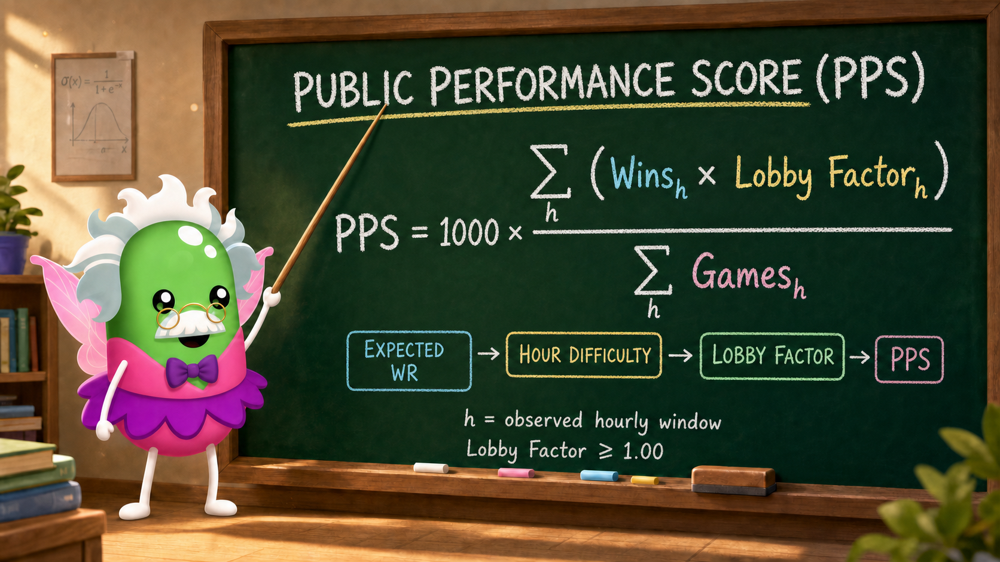

One selected month
All rated games observed during that month. Published after at least 30 rated games.

PPS is a context-adjusted winrate. Wins earned during harder observed hours count more.
PPS measures public-game performance—not permanent skill.
All rated games observed during that month. Published after at least 30 rated games.
Exactly the latest 300 rated games. Published once all 300 games are available.
THE IDEA IN THREE STEPS
Only earlier observations estimate how often each player would normally win.
Expected and actual results are compared. If observed players win less than expected, the hour appears harder.
Wins are multiplied by their hour’s Lobby Factor and divided by all rated games.
A SIMPLE EXAMPLE
7 wins ÷ 10 games = 70% WR
70% WR × 1.00 = 700
PPS5 wins ÷ 10 games = 50% WR
50% WR × 1.40 = 700
PPSIn this simplified example, all ten games were played during the displayed hour. More wins in easier hours can produce the same PPS as fewer wins in harder hours.
YOUR PPS
SAME TIME · DIFFERENT FIELD
Sunday at 12:00 can produce a different field from Monday at 12:00. GooberStats rates each observed hourly window separately—not individual in-game lobbies.
Same local time. Different players. Different measured difficulty.
EXPLORE THE HOURS
Find active players, popular times, average Lobby Factors and the hardest hours ever recorded.
This is the exact method used by GooberStats. Each step includes the formula, its variables, why it exists and a simple example.
We estimate normal performance using only information available before the rated hour begins.
G_recent / W_recent: up to the previous 300 observed games and wins.G_history / WR_history: older profile evidence for returning players.age: days since that evidence; its weight halves every 365 days.Prior games: 40 for a known returning player, otherwise 100.WR_population: median historical winrate of established observed players.Why: Ten wins are less surprising for a player who usually wins 70% than one who usually wins 20%. The rated hour can never change its own expectation.
Example: 60 wins in the previous 200 games provide a 30% recent baseline before history and priors are applied.
Expected results are compared with wins actually observed in that hour.
i: one observed player.δ: raw shift that matches expected results to actual wins.q_i: adjusted expected probability for that player.I: useful information in the window.Why: Players are weighted by games played. A negative δ means the hour appears harder.
Example: If the field was expected to earn 40 wins but earned only 25, the fitted effect becomes negative.
A noisy hour is pulled toward its stable hour-of-day pattern; a well-observed hour keeps more of its own result.
λ: how much the individual window is trusted.τ²: estimated real variance between windows.I: information from the previous step.Hour prior: stable long-term pattern for that time of day.Why: One strange result with little information should not create a record bonus. Confidence is very low below 10, low from 10, medium from 25 and high from 50.
Example: With λ = 0.80, the measured window supplies 80% of the adjustment.
The easiest stable observed hour-of-day is the zero-bonus reference. Harder effects produce a larger factor.
s: smoothed effect of this hourly window.Easiest reference: zero-bonus baseline.Lobby Bonus: adjustment shown as a percentage.Lobby Factor: the same adjustment as a multiplier.Why: The factor turns measured hourly difficulty into a weight for wins. It belongs to an observed hour, not one specific lobby.
Example: A +40% Lobby Bonus equals a ×1.40 Lobby Factor.
Every observed win is multiplied by its hour’s Lobby Factor. Losses remain in the denominator.
Why: The exact formula remembers when wins occurred, so it is not always Monthly WR × average Lobby Factor × 10.
Example: 242.6 bonus-weighted wins across 380 games produce 1000 × 242.6 ÷ 380 = 638 PPS.
READ THIS BEFORE COMPARING PLAYERS
GooberStats observes public profile changes during scheduled hourly snapshots. Current coverage is approximately — of scheduled snapshots in the evaluated period. That does not mean the same percentage of all matches or players was observed.
We do not know the exact players sharing each match. Lobby Factor rates the public field observed during an hour.
Some Goobers maximize safe wins. Others experiment, joke around, help friends, skip rounds or take risks. Lower PPS can still coexist with greater mechanical skill.
Friends can help someone win. Alt accounts can smurf or sabotage another player. Public totals do not reliably reveal why a result happened.
Not every profile, bot or game is visible. Missing snapshots and unknown profiles introduce uncertainty.
Small or unusual windows are smoothed more strongly. Confidence measures useful information, not whether players are trustworthy.
PPS asks how strong the wins we observed were. It does not prove who would always win a fair match.